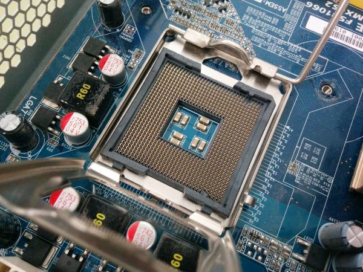

El zócalo de CPU (socket en inglés) es un tipo de zócalo electrónico (sistema electromecánico de soporte y conexión eléctrica) instalado en la placa base, que se usa para fijar y conectar el microprocesador sin soldarlo, lo cual permite ser extraído después. Por ello, se utiliza en equipos de arquitectura abierta, donde se busca que haya modularidad en la variedad de componentes, permitiendo el cambio de la tarjeta o el integrado. En los equipos de arquitectura propietaria, los integrados se añaden sobre la placa base soldándolo, como sucede en las videoconsolas.
Existen variantes desde 40 conexiones para integrados pequeños, hasta más de 1300 para microprocesadores, los mecanismos de retención del integrado y de conexión dependen de cada tipo de zócalo, aunque en la actualidad predomina el uso de zócalo con pines (Zero Insertion Force, ZIF) o LGA (Land Grid Array) con contactos. También hay otros dos tipos de socket como el PGA (Pin Grid Array) y BGA (Ball Grid Array). De parte de Intel son muy pocos los socket de tipo PGA pero por parte de AMD es totalmente lo contrario y BGA es muy común en laptops o Netbooks que no comparten los mismos socket que los ordenadores de escritorio.
En 1947, Tom Kilburn, Frederic Calland Williams y Geoff Tootill de la Universidad de Mánchester desarrollaron la primera memoria RAM práctica, el Tubo Williams (Williams tube), La memoria estaba construido a partir de un tubo de rayos catódicos y se utilizó con éxito en el primer computador del mundo con programa almacenado, el Manchester Baby en 1948.
Uno de los primeros tipos de memoria RAM fue la memoria de núcleo magnético, desarrollada entre 1949 y 1952 y usada en muchos computadores hasta el desarrollo de circuitos integrados a finales de los años 60 y principios de los 70. Esa memoria requería que cada bit estuviera almacenado en un toroide de material ferromagnético de algunos milímetros de diámetro, lo que resultaba en dispositivos con una capacidad de memoria muy pequeña. Antes que eso, las computadoras usaban relés y líneas de retardo de varios tipos construidas para implementar las funciones de memoria principal con o sin acceso aleatorio.
En 1969 fueron lanzadas una de las primeras memorias RAM basadas en semiconductores de silicio por parte de Intel Corporation con el integrado 3101 de 64 bits de memoria y para el siguiente año se presentó una memoria DRAM de 1024 bits, referencia 1103 que se constituyó en un hito, ya que fue la primera en ser comercializada con éxito, lo que significó el principio del fin para las memorias de núcleo magnético. En comparación con los integrados de memoria DRAM actuales, la 1103 es primitiva en varios aspectos, pero tenía un desempeño mayor que la memoria de núcleos.
En 1973 se presentó una innovación que permitió otra miniaturización y se convirtió en estándar para las memorias DRAM: la multiplexación en tiempo de la direcciones de memoria. Mostek lanzó la referencia MK4096 de 4096 bytes en un empaque de 16 pines, mientras sus competidores las fabricaban en el empaque DIP de 22 pines. El esquema de direccionamiento se convirtió en un estándar de facto debido a la gran popularidad que logró esta referencia de DRAM. Para finales de los 70 los integrados eran usados en la mayoría de computadores nuevos, se soldaban directamente a las placas base o se instalaban en zócalos, de modo que ocupaban un área extensa de circuito impreso. Luego se hizo obvio que instalar la RAM en el impreso principal impedía miniaturizar, entonces se idearon los primeros módulos de memoria como el SIPP, usando las ventajas de la construcción modular. El formato SIMM fue una mejora al anterior. Eliminó los pines metálicos y dejó áreas de cobre en uno de los bordes del impreso, muy similares a los de las tarjetas de expansión, de hecho los módulos SIPP y los primeros SIMM tienen igual distribución de pines.
A fines de los 80 el aumento de velocidad de los procesadores y el aumento en el ancho de banda requerido, dejaron atrás a las memorias DRAM con el esquema original MOSTEK, de manera que se realizaron mejoras en el direccionamiento como las siguientes:
Durante la segunda mitad de 2025, los precios de la RAM subieron entre 30% y 60% en el mercado y, en algunos casos, los chips usados para unidades SSD se duplicaron de precio. La relación entre ambos casos es la demanda de los centros de datos enfocados en IA generativa. Para 2026, se prevé que la producción de memorias avanzadas, como HBM, esté totalmente comprometida, ya que la de NAND de alta densidad se ha vendido por adelantado y hasta los módulos DDR5 y LPDDR para teléfonos tendrían una disponibilidad limitada. Este efecto también impactaría a los precios de PCs, laptops, teléfonos inteligentes, servidores para pequeñas empresas y hasta los sistemas de almacenamiento doméstico que serían más caros para el consumidor común.
Fast Page Mode RAM (FPM-RAM) fue inspirado en técnicas como el Burst Mode usado en procesadores como el Intel 486. Se implantó un modo direccionador en el que el controlador de memoria envía una sola dirección y recibe a cambio esa y varias consecutivas sin necesidad de generar todas. Esto ahorra tiempos, ya que ciertas operaciones son repetitivas al querer acceder a muchas posiciones seguidas. Es como si deseáramos visitar todas las casas en una calle: tras la primera vez no sería necesario decir el número de la calle, sino sólo seguir la misma. Se fabricaban con tiempos de acceso de 70 o 60 ns y fueron muy populares en sistemas basados en el 486 y primeros Pentium.
Extended Data Output RAM (EDO-RAM) fue lanzada al mercado en 1994 y con tiempos de accesos de 40 o 30 ns suponía una mejora sobre FPM, su antecesora. La EDO, también es capaz de enviar direcciones contiguas pero direcciona la columna que va a utilizar mientras se lee la información de la columna anterior, resultando en eliminar estados de espera manteniendo activo el búfer de salida hasta que comienza el próximo ciclo de lectura.
Burst Extended Data Output RAM (BEDO-RAM) fue la evolución de la EDO-RAM y competidora de la SDRAM, fue presentada en 1997. Era un tipo de memoria que usaba generadores internos de direcciones y accedía a más de una posición de memoria en cada ciclo de reloj, de manera que lograba un 50 % de beneficios, mejor que la EDO. No se comerció, pues Intel y otros fabricantes se decidieron por esquemas de memoria síncronos que si bien tenían mucho del direccionamiento MOSTEK, sumaban funciones distintas como señales de reloj, entre otras.